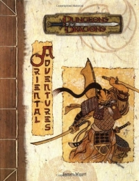

“Oriental Adventures” on the
Shelf of Many Books

Oriental Adventures
D&D 3.0
(3e)
Year
: 2001
Oriental Adventures
on Amazon
Oriental Adventures
on Amazon
Known monsters from the book:
Akuma no Oni
Ashi no Oni
Asp Naga
Bajang
Bakemono
Bisan
Bog Hag
Byoki no Oni
Chameleon Naga
Chiang Lung
Cobra Naga
Common Oni
Constrictor Naga
Crow-Headed Tengu
Doc Cu’o’c
Dokufu
Einsaung
Fire Toad
Gekido no Oni
Ghost
Giant Toad
Go-Zu Oni
Greensnake Naga
Haino no Oni
Hannya
Hebi-No-Onna
Hengeyokai
Hkum Yeng
Hopping Vampire
Human-Headed Tengu
Ice Toad
Jiki-Ketsu-Gaki
Jiki-Niku-Gaki
Kamu no Oni
Kappa
Ki-Rin
Korobokuru
Kyoso no Oni
Large Nature Spirit
Least Spirit Centipede
Lesser Spirit Centipede
Li Lung
Lu
Lung Wang
Mamono
Me-Zu Oni
Medium Nature Spirit
Nezumi
Onikage
Pan Lung
Pennaggolan
Poisonous Toad
Rokuro-Kubi
Sanru no Oni
Shen Lung
Shikibu no Oni
Shikki-Gaki
Shinen-Gaki
Shirokinu-Katsukami
Small Nature Spirit
Small Spirit Centipede
Spirit Folk
Tako
Tasloi
Tigbanua Buso
Tsuburu no Oni
Tsuno
Tun Mi Lung
T’ien Lung
Ugulu no Oni
Wang-Liang
Yattoko no Oni
Yeti
Yu Lung
Yuki-On-Na